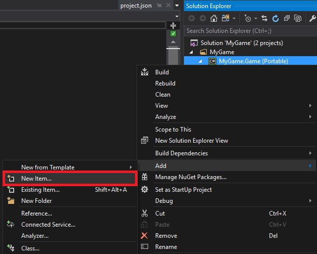
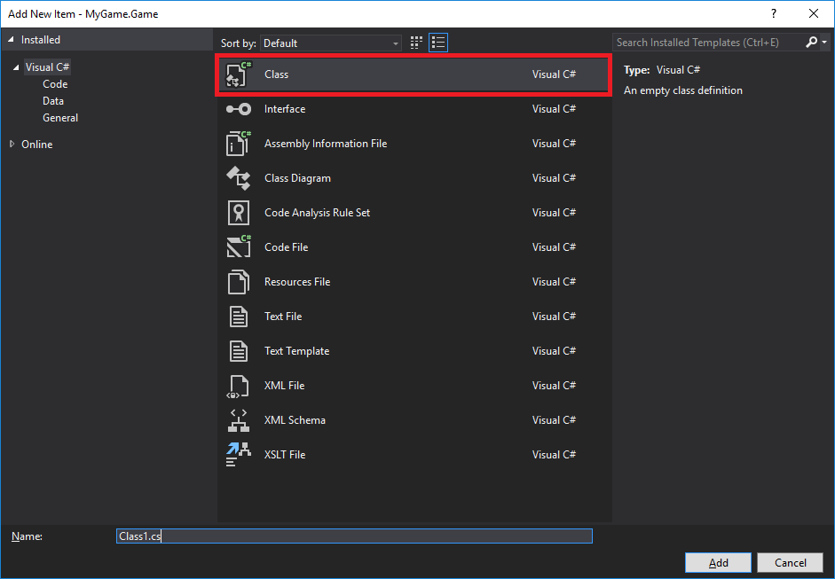
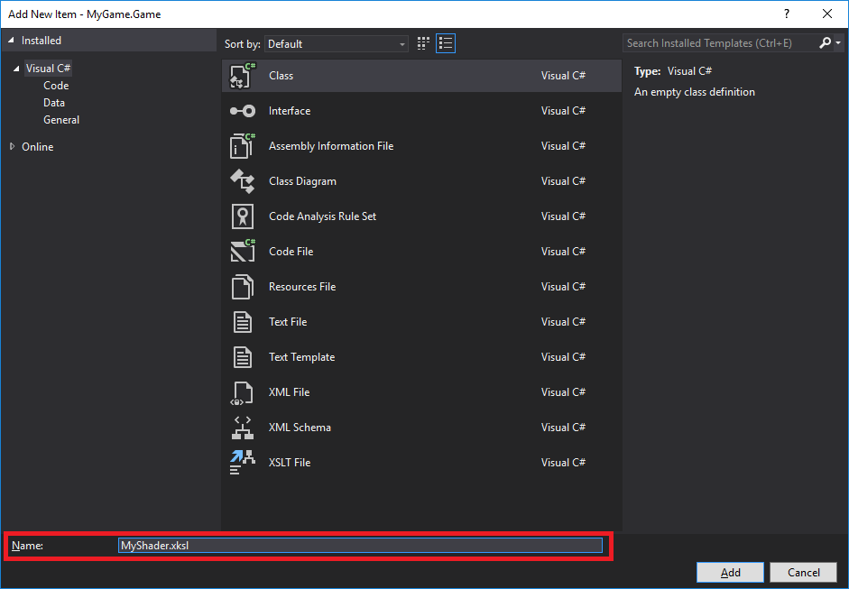
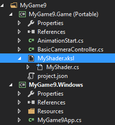
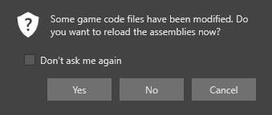
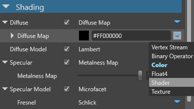
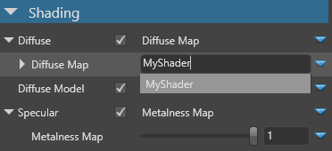
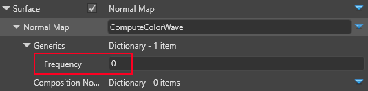
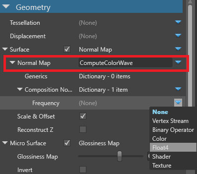
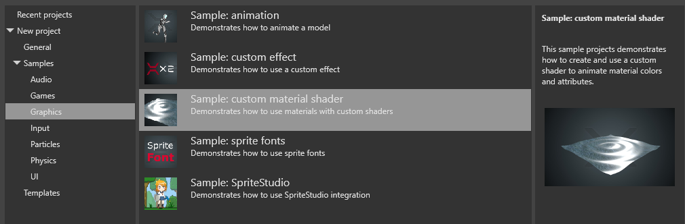

Custom shaders
Intermediate Programmer
You can write your own shaders in Visual Studio and use them in material attributes. For example, you can write a shader to add textures to materials based on the objects' world positions, or generate noise and use it to randomize material properties.
As shaders are text files, you can add comments, enable and disable lines of code, and edit them like any other code file. This makes them easy to maintain and iterate.
You can also use custom shaders to create custom post effects. For more information, see Custom color transforms.
Create a shader
Option 1: Using Visual Studio (Recommended for Game Studio workflow)
Make sure you have the Stride Visual Studio extension installed. This is necessary to convert the shader files from SDSL (Stride shading language) to
.csfiles.In Game Studio, in the toolbar, click (Open in IDE) to open your project in Visual Studio.
In the Visual Studio Solution Explorer, right-click the project (eg MyGame.Game) and select Add > New item.

Select Class.

In the Name field, specify a name with the extension .sdsl (eg MyShader.sdsl), and click Add.

The Stride Visual Studio extension automatically generates a
.csfile from the.sdslfile. The Solution Explorer lists it as a child of the.sdslfile.
Open the
.sdslfile, remove the existing lines, and write your shader.Shaders are written in Stride Shading Language (SDSL), which is based on HLSL. For more information, see Shading language.
For example, this shader creates a green color (
RGBA 0;1;0;1):namespace MyGame { shader MyShader : ComputeColor { override float4 Compute() { return float4(0, 1, 0, 1); } }; }Note
Make sure the shader name in the file (eg
MyShaderabove) is the same as the filename.Note
To be accessible from the Game Studio Property Grid, the shader must inherit from
ComputeColor. AsComputeColoralways returns a float4 value, properties that take float values (eg metalness and gloss maps) use the first component (the red component) of the value returned byComputeColor.Save all the files in the solution (File > Save All).
In Game Studio, reload the assemblies.

Option 2: Using Visual Studio Code (Advanced shader development)
For shader-focused development with enhanced IntelliSense and inheritance visualization:
Install Visual Studio Code or VSCodium
Install the Stride Shader Tools extension:
- VS Code Marketplace
- OpenVSX (for VSCodium and other alternatives)
Create your
.sdslfile in your project's Assets folder (or a subfolder within Assets)Note
Shaders must be in the Assets folder of your package (the folder containing the
.sdpkgfile). This is part of Stride's project structure.VS Code provides:
- Context-aware completions for inherited members, streams, and semantics
- Live inheritance tree visualization
- Go-to-definition through the shader hierarchy
- Real-time error reporting
For detailed information on shader development with VS Code, see Shader development with Visual Studio Code.
Note
When using VS Code for shader authoring, you still need Visual Studio with the Stride extension to generate the .cs files that Game Studio requires. The typical workflow is: develop and edit shaders in VS Code, then open the solution in Visual Studio to trigger the code generation, and finally reload assemblies in Game Studio.
The **Asset View** lists the shader in the same directory as your scripts (eg **MyGame.Game**).

>[!Note]
>In some situations, Game Studio incorrectly identifies the shader as a script, as in the screenshot below:
>
>If this happens, restart Game Studio (**File > Reload project**).
Use a custom shader
You can use custom shaders in any material attribute.
In the Asset View, select the material you want to use the shader in.
In the Property Grid, next to the property you want to control with the shader, click (Change) and select Shader.

In the field, type the name of your shader (eg MyShader).

The property uses the shader you specify.
Tip
When you make a change to the .sdsl file in Visual Studio and save it, Game Studio automatically updates the project with your changes. If this doesn't happen, restart Game Studio (File > Reload project).
Note
If you delete a shader from the project assets, to prevent errors, make sure you also remove it from the properties of materials that use it.
Arguments and parameters
Template arguments
Template arguments (generics) don't change at runtime. However, different materials can use different instances of the shader with different values.
When the shaders are compiled, Stride substitutes template arguments with the value you set in the Property Grid.
For example, the code below defines and uses the template argument Frequency:
shader ComputeColorWave<float Frequency> : ComputeColor, Texturing
{
override float4 Compute()
{
return sin((Global.Time) * 2 * 3.14 * Frequency);
}
};

Parameters
Parameters can be changed at runtime.
For example, the code below defines and uses the dynamic parameter Frequency:
shader ComputeColorWave: ComputeColor, Texturing
{
cbuffer PerMaterial
{
stage float Frequency = 1.0f;
}
override float4 Compute()
{
return sin(( Global.Time ) * 2 * 3.14 * Frequency);
}
};
To modify the value at runtime, access and set it in the material parameter collection. For example, to change the Frequency, use:
myMaterial.Passes[myPassIndex].Parameters.Set(ComputeColorWaveKeys.Frequency, MyFrequency);
Note
ComputeColorWaveKeys.Frequency is generated by the Stride Visual Studio extension from the shader file.
Compositions
This composition lets you set the Frequency in the Game Studio Property Grid:
shader ComputeColorWave : ComputeColor, Texturing
{
compose ComputeColor Frequency;
override float4 Compute()
{
return sin(( Global.Time ) * 2 * 3.14 * Frequency.Compute().r);
}
};
Then you can set the value in the material properties:

Troubleshooting
You can access the compilation logs of your shaders through the Game Studio's debug window's EffectCompilerCache tab (Ctrl+Shift+D or Help>Show debug window).
The launcher hosts a Visual Studio extension specifically for syntax highlighting and errors you may want to use. For advanced shader development with enhanced IntelliSense, see Shader development with Visual Studio Code.
The engine's source also provides a good reference point for how one would write shaders. Stride.ShaderExplorer is an excellent standalone tool for browsing and exploring the complete shader library and their inheritance relationships.
A common issue you may stumble onto is the following:
E1202: The mixin X in Y dependency is not in the module
This error often comes about as a result of missing or malformed Generics and Composition nodes. When that is the case you have two options:
- Either manually fill these in through the material's Yaml file.
- Or remove and add the shader back in.
In both cases, you will have to close the Game Studio before doing those operation, for the former it's to ensure that the asset is reloaded from the disk. And for the latter, it's because the cache used by the property grid needs to be rebuilt.
We're currently in the process of rebuilding the shader system's backend, which should hopefully get rid of these friction.
Custom shader sample
For an example of a custom shader, see the custom material shader sample project included with Stride.

In the project, the ComputeColorWaveNormal shader is used in the displacement map and surface material properties.